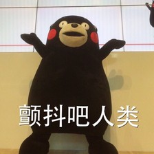

What
熊本熊（日语：くまモン，英语：Kumamon），又译为萌熊或熊纹，日本九州熊本县政府于2010年邀请当地出身的作家小山薰堂及设计师水野学设计出来的地区吉祥物，为日本全国知名在地吉祥物（ゆるキャラ；Yuru-Chara）的其中一个角色，志在于九州新干线全线通车后推动本土经济。推出不到三年，其认知度已经是全日本第一，甚至超越了米奇老鼠及凯蒂猫。
熊本战队 周报
2016.03
about
Kumamon
Kumamon a mascot created by the government of Kumamoto Prefecture, Japan.
700
443 thousand follower
What
熊本熊（日语：くまモン，英语：Kumamon），又译为萌熊或熊纹，日本九州熊本县政府于2010年邀请当地出身的作家小山薰堂及设计师水野学设计出来的地区吉祥物，为日本全国知名在地吉祥物（ゆるキャラ；Yuru-Chara）的其中一个角色，志在于九州新干线全线通车后推动本土经济。推出不到三年，其认知度已经是全日本第一，甚至超越了米奇老鼠及凯蒂猫。
When
熊本熊（日语：くまモン，英语：Kumamon），又译为萌熊或熊纹，日本九州熊本县政府于2010年邀请当地出身的作家小山薰堂及设计师水野学设计出来的地区吉祥物，为日本全国知名在地吉祥物（ゆるキャラ；Yuru-Chara）的其中一个角色，志在于九州新干线全线通车后推动本土经济。推出不到三年，其认知度已经是全日本第一，甚至超越了米奇老鼠及凯蒂猫。
How
熊本熊很萌
熊本熊很很萌
熊本熊很很很萌
熊本熊很很很很萌
熊本熊很很很很很萌
熊本熊（日语：くまモン，英语：Kumamon），又译为萌熊或熊纹，日本九州熊本县政府于2010年邀请当地出身的作家小山薰堂及设计师水野学设计出来的地区吉祥物，为日本全国知名在地吉祥物（ゆるキャラ；Yuru-Chara）的其中一个角色，志在于九州新干线全线通车后推动本土经济。推出不到三年，其认知度已经是全日本第一，甚至超越了米奇老鼠及凯蒂猫。  熊本熊（日语：くまモン，英语：Kumamon），又译为萌熊或熊纹，日本九州熊本县政府于2010年邀请当地出身的作家小山薰堂及设计师水野学设计出来的地区吉祥物，为日本全国知名在地吉祥物（ゆるキャラ；Yuru-Chara）的其中一个角色，志在于九州新干线全线通车后推动本土经济。推出不到三年，其认知度已经是全日本第一，甚至超越了米奇老鼠及凯蒂猫。 熊本熊（日语：くまモン，英语：Kumamon），又译为萌熊或熊纹，日本九州熊本县政府于2010年邀请当地出身的作家小山薰堂及设计师水野学设计出来的地区吉祥物，为日本全国知名在地吉祥物（ゆるキャラ；Yuru-Chara）的其中一个角色，志在于九州新干线全线通车后推动本土经济。推出不到三年，其认知度已经是全日本第一，甚至超越了米奇老鼠及凯蒂猫。
熊本熊 本宝宝世界第一萌
0
ONE TWO
THREE FOUR FIVE
hello world hello world hello world
“ hello world hello world hello world hello world hello world hello world hello world ”